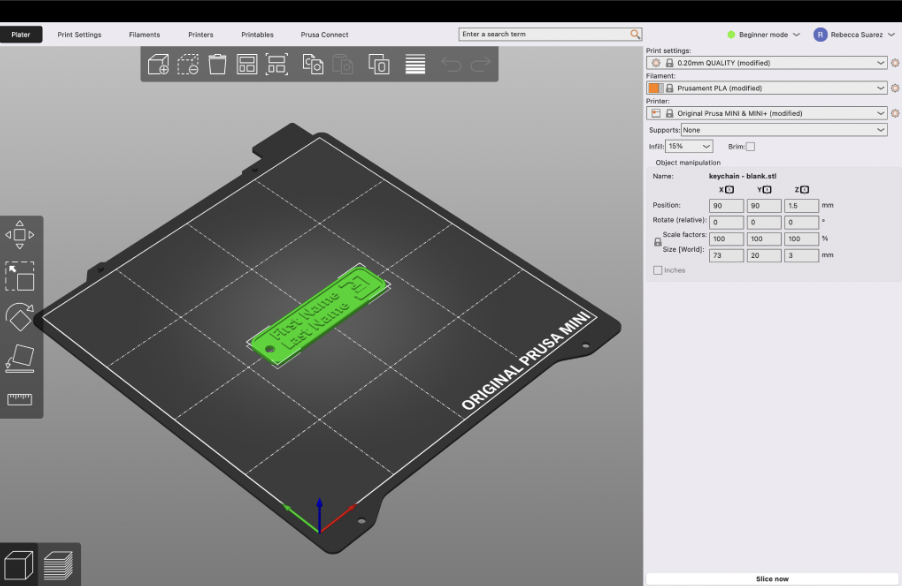
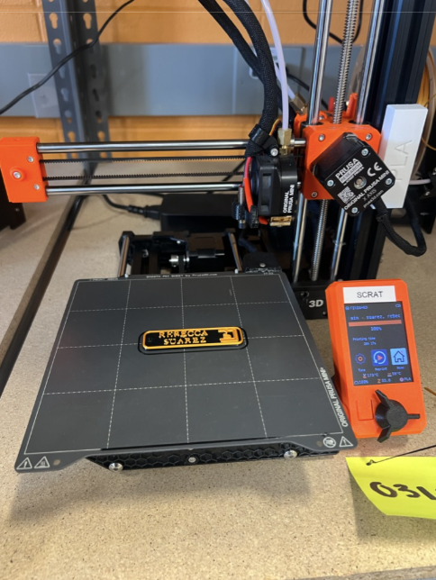
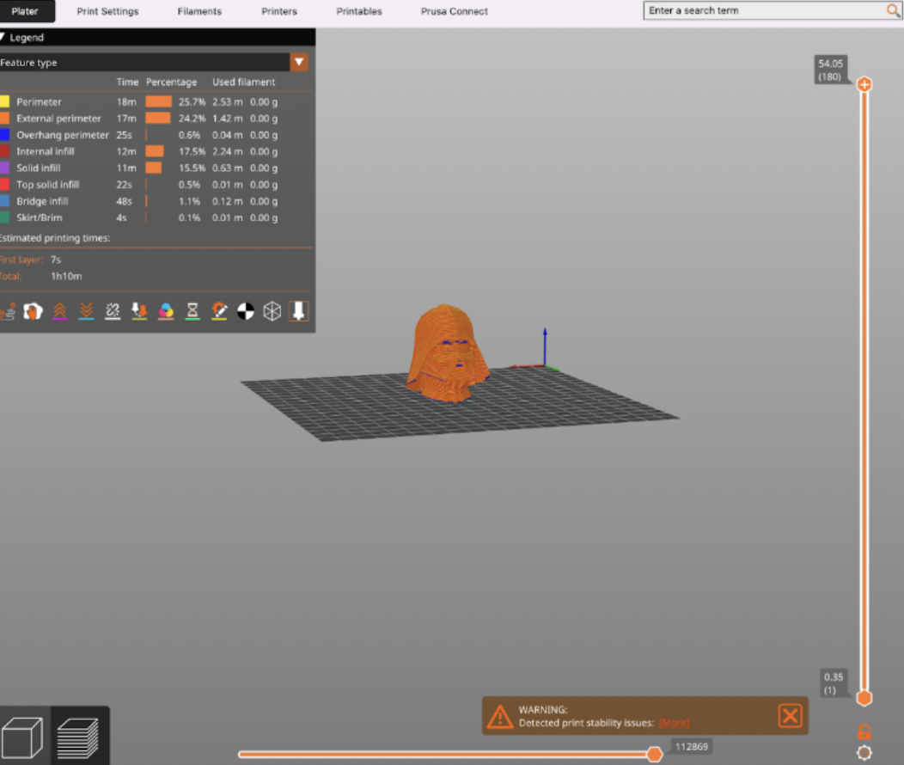
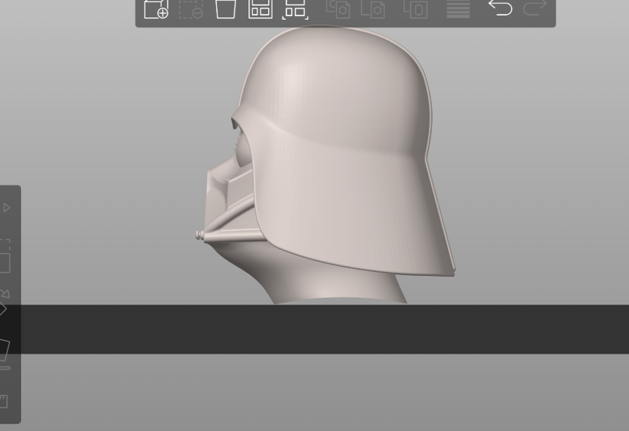
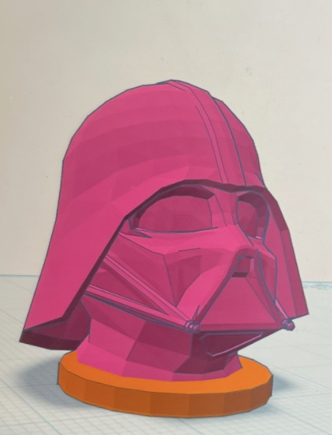

Introduction
Over the past few weeks, I've had the opportunity to learn about each aspect of what goes into the creation of 3D printing from the Prusa MINI+ 3D printer at Brandeis University. By learning from Professors Ian Roy and Ben Rogers, I have learned the basics of computer-aided design (CAD) and computer-aided manufacturing (CAM). I also learned how to use a Prusa MINI+ 3D Printer and Prusa Slicer Software, how to configure the Prusa Slicer, and how to “slice” a 3D file. By learning these significant aspects, I then learned how to make my first 3D printed design: a nametag. After this, I conducted two “torture tests”, where I printed two complex objects of my choice in order to showcase the potential limitations of the Prusa MINI+ 3D printer.
Preparation
In order to first get started with any of my prints, including the nametag and the two designs of my choice for the “torture test”, I had to go through a long and thorough process to make sure I understood what designs were acceptable to print. I was then advised of the potential dangers and injuries one may face when operating a Prusa MINI+ 3D printer (i.e. one may burn themselves if they expose their bare skin onto the nozzle or the heating plate). After the basic safety precautions and expectations were established, it was time to officially start the entirety of project 1.
Step 1: Download and set up Prusa Slicer for the Prusa MINI+ 3D printer.
Before starting any project, it was extremely important and necessary to download and understand the ins and outs of the Prusa Slicer software. The reason being? This is where I would upload the 3D design of the nametag from an exisiting 3MF file that was provided by Professor Roy and Rogers, in addition to the other 3D designs that were obtained from the website Printables.
Step 2: Properly upload and “slice” selected 3D design.
After learning the basics of the Prusa Slicer Software, it was time to upload the first selected design, the nametag, into Prusa Slicer. 
Once the 3D design was uploaded from an exisitng 3MF file, it was time to change some of the key CAM settings for each design to:
- Print Settings -> 0.20 Quality (modified)
- Filament -> Prusament PLA (modified)
- Printer -> Original Prusa MINI & MINI+ (modified)
- Infill -> 15%
After it was determined that the design was suitable, it was time to “slice” the 3D design. From slicing,
I was able to be provided with information regarding the design, including:
- Used filament (in g, m, and mm^3)
- Cost
- Estimated Printing Time
The last step to this process was to export the g-code and upload it to a USB.
Step 3: Plug in USB to Prusa MINI+ 3D and prep the Prusa MINI+ 3D printer.
Once I was done successfully exporting the g-code of this design to the USB, I simply connected the USB to the Prusa MINI+ 3D printer. However, the preparation of printing the object was not finished yet. After this step, I had to prep the material, the filament PLA, to the printer. After cutting the tip of the filament at a 45 degree angle, the filament was prepped properly to be inserted into the nozzle on the side of the printer.
Step 4: Final checking of settings on the machine, then print!
The last step of the process is to check the settings on the screen of the printer to make sure the correct design was selected to print, the correct material was inserted into the machine, and to make sure the printer was accepting the material. Once everything was checked out and ready to go, it was time to start the printing process!
The Nametag
Out of the three designs that were executed, the first design that was printed was the nametag. This design was extremely straightforward and occurred so I could gain a basic understanding of how the Prusa MINI+ 3D printer works. In addition to observing how the Prusa MINI+ 3D printer operates, I was tasked with stopping the printing process half way through to change the color (therefore, the body of the nametag would be one color [black] and the font would be a different color [gold]). After about 22 minutes of printing time, the final product was finished!
Challenges I faced and how I overcame them:
After loading the printer with my first color (black), I was faced with my first challenge: nothing was printing, regardless of the filament being properly loaded, or so I thought. Facing this challenge taught me the importance of making sure the filament was all the way in the correct hub and that the printer was accepting it. Meaning, the way I was able to make sure that the printer was accepting the material is by placing my fingers near the entering hub. If I did not feel a slight tug on the filament, I knew I had a loading issue that needed to be resolved. If I did feel a tug, I knew the printer accepted the filament.
The second challenge that I faced with the nametag was the process of changing the color. Making sure the previous color was ejected properly from the machine took a little bit of time and guidance. However, I learned that after the ejection process, the machine will print out a bit more filament of the new color and will ask you “is this the correct color”. From here, I would either select “yes” or “no”. After clicking “yes”, I knew that I was ready to finish the printing process.
Torture Test #1: Golf Ball with Boots and a Crown
The second design and the first torture test that I conducted was the 3D design of golf ball with boots and a crown. It is important to note that for this 3D print, I went through the same preparation process that I endured for the nametag print. Thus, this is what my Prusa Slicer application looked like after uploading my 3D design (as an STL file) on Prusa Slicer and then slicing the design.

In my opinion, I believe that this design was very complex, as after slicing the 3D design on Prusa Slicer, it was revealed that the estimated printing time was about 10 hours and 30 minutes. Once I found the design and settings suitable for printing, I loaded the Pursa MINI+ 3D printer with the gold PLA filament and started the printing process.
Challenges I faced and how I overcame them:
Due to the fact that this print took about 10 hours and 30 minutes to print, it was very hard to check up on the print to make sure it was printing correctly with little to no complications. With that being said, I wanted to conduct another torture test to make sure that this first print was not a complete fail. Thus, the start of my next torture test, the Darth Vader Mask.
Limitations:
Although my final print of this design is somewhat successful, there was a slight limitation to the print. If you look at the underside of the final product, we can see that the material is a bit stringy and not smooth like the rest of the print. I believe that if I added some type of support for the underside of the object, there may have been some type of improvement for the final result of this print.
Torture Test #2: Darth Vader Mask
The final print and second torture test that I conducted was executing a 3D print of a Darth Vader Mask. Similar to the last two prints that have been mentioned, I went through the same preparation process. Therefore, this is what my 3D design looked like once I uploaded (as an STL file) the design onto Prusa Slicer. 
After observing the design in Prusa Slicer and looking at the estimated print time, I thought this print would be a lot easier than my first one. However, I encountered a ton of challenges during the CAM settings stage that hindered the printing process. After overcoming these challenges, I then discovered limitations to the design itself. Once I overcame each challenge and limitation, I loaded the printer up with the black filament, and started the printing process.
Challenges I faced and how I overcame them:
As stated before, there were a ton of challenges with printing this specific design. The first challenge was the fact that the Darth Vader Mask was not leveled with the heating mat. 
As a result of this challenge, the filament kept bundling up and I had to keep restarting the print. In order to overcome this
challenge, I used a tool called “TinkerCad” to add a base so the start of the design was leveled to the heating mat.

After fixing this issue, I discovered another issue, the settings for the print itself. Because adding the base to the mask made a new design, the settings automatically changed to this: